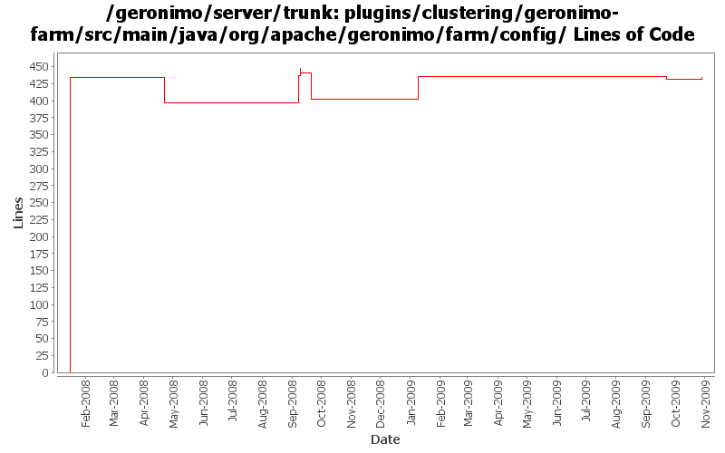

[root]/plugins/clustering/geronimo-farm/src/main/java/org/apache/geronimo/farm/config

| Author | Changes | Lines of Code | Lines per Change |
|---|---|---|---|
| Totals | 19 (100.0%) | 560 (100.0%) | 29.4 |
| gdamour | 9 (47.4%) | 444 (79.3%) | 49.3 |
| djencks | 7 (36.8%) | 76 (13.6%) | 10.8 |
| dwoods | 1 (5.3%) | 34 (6.1%) | 34.0 |
| rickmcguire | 1 (5.3%) | 4 (0.7%) | 4.0 |
| genspring | 1 (5.3%) | 2 (0.4%) | 2.0 |
changes to get openjpa2 to build
4 lines of code changed in 1 file:
GERONIMO-4882 some doc update in G22 might be caused by bugs in code.
2 lines of code changed in 1 file:
GERONIMO-4498 ClassNotFoundException: BasicExtendedJMXConnectorInfoEditor throwned when farming geronimo using Deployment. Applied patch from Shawn Jiang.
34 lines of code changed in 1 file:
GERONIMO-4239 Reaarrange some jsr88 related classes to fix a nasty classcast exception in the offline deployer. Move some farming classes around to eliminate an inessential dependency on deployment code
3 lines of code changed in 2 files:
GERONIMO-4284 remove unneeded host name substitution
2 lines of code changed in 1 file:
GERONIMO-4284 add discovery based on code from activemq via openejb
14 lines of code changed in 1 file:
GERONIMO-4284 beginnings of plugin based farm management
57 lines of code changed in 3 files:
Use annotation style GBean configuration.
10 lines of code changed in 2 files:
Move farm related classes to new sub-project geronimo-farm. Add a new
configuration "farming" and move farming related GBeans from the clustering
config. to this new one. Also, by default this configuration is not started.
434 lines of code changed in 7 files: